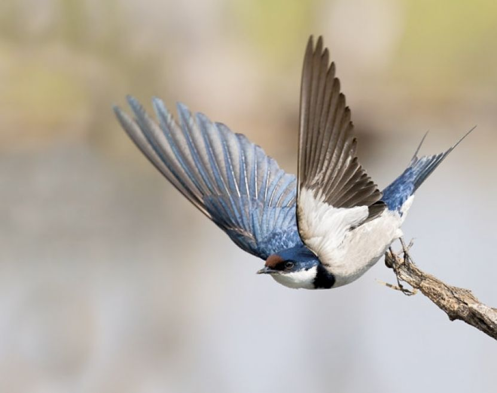
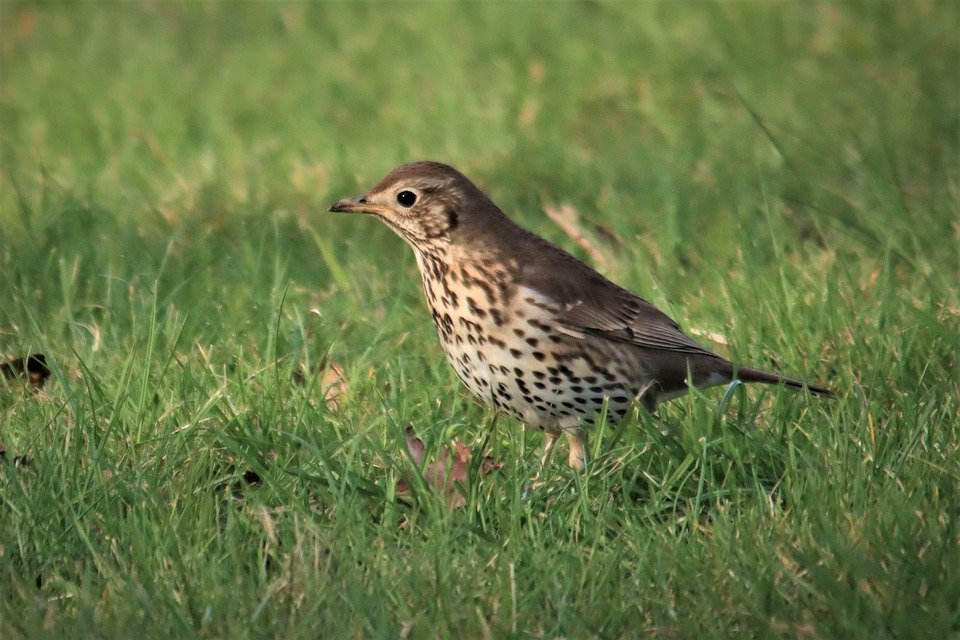

Gil zwyczajny, gil (Pyrrhula pyrrhula) – gatunek małego ptaka z rodziny łuszczakowatych (Fringillidae), zamieszkujący Eurazję. Nie jest zagrożony.
Jaskółka

Dymówka, jaskółka dymówka (Hirundo rustica) – gatunek niewielkiego ptaka wędrownego z rodziny jaskółkowatych (Hirundinidae).
Śpiewak

Drozd śpiewak, śpiewak (Turdus philomelos) – gatunek średniej wielkości ptaka z rodziny drozdowatych (Turdidae), zamieszkującego Eurazję. Wierzch ciała brązowy o ciepłym odcieniu, kuper i pokrywy nadogonowe oliwkowe, ogon i wierzch głowy pomarańczowobrązowe. Spód ciała kremowy z gęstymi brązowymi plamkami. Wyróżnia się trzy podgatunki. Do jego charakterystycznej piosenki, w której powtarza muzyczne frazy, często odnoszono się w poezji.
Szpak
Szpak zwyczajny, szpak (Sturnus vulgaris) – gatunek średniej wielkości ptaka z rodziny szpakowatych (Sturnidae). Częściowo wędrowny. Pierwotnie zamieszkiwał wyłącznie Eurazję. Nie jest zagrożony wyginięciem. Dzięki introdukcji gatunek kosmopolityczny, w 13 podgatunkach występuje na każdym kontynencie poza Antarktydą; poza rodzimym zasięgiem także w Ameryce Północnej (od Jukatanu po Alaskę), Argentynie, Południowej Afryce, wschodniej Australii, Nowej Zelandii i okolicznych wyspach. Jest to gatunek inwazyjny.
Wilga
Wilga zwyczajna, wilga (Oriolus oriolus) – gatunek średniej wielkości ptaka wędrownego z rodziny wilgowatych (Oriolidae), jedyny z tej rodziny rozmnażający się w północnej strefie umiarkowanej. Nie jest zagrożony wyginięciem.